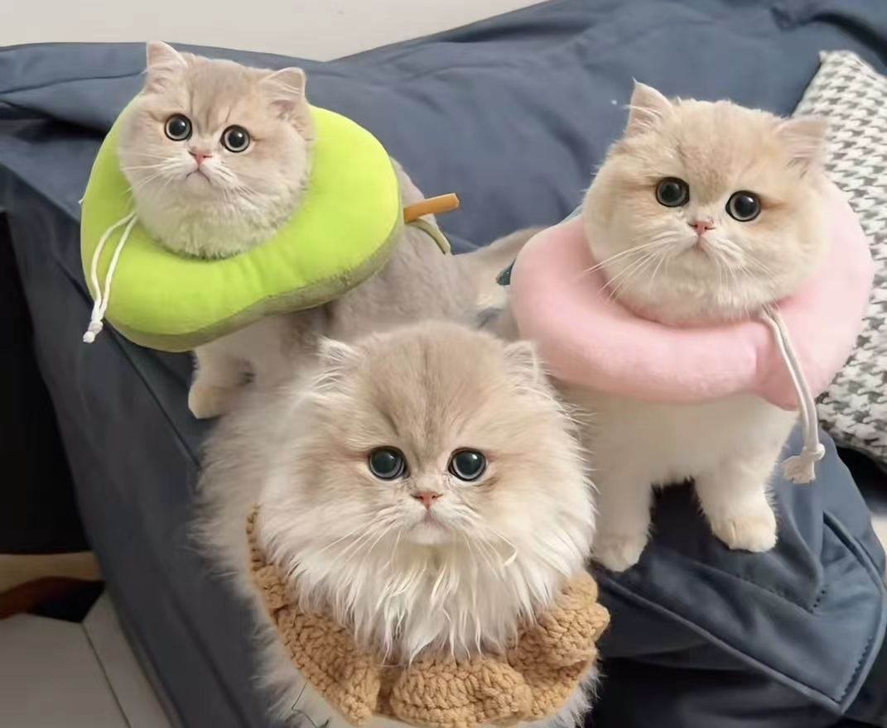
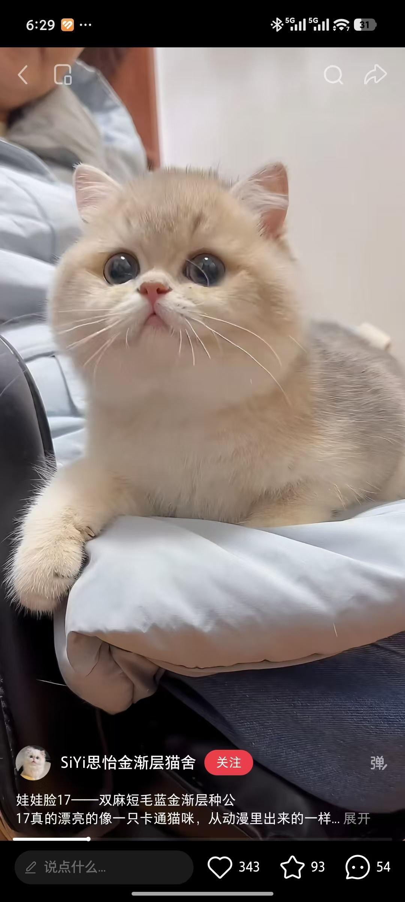
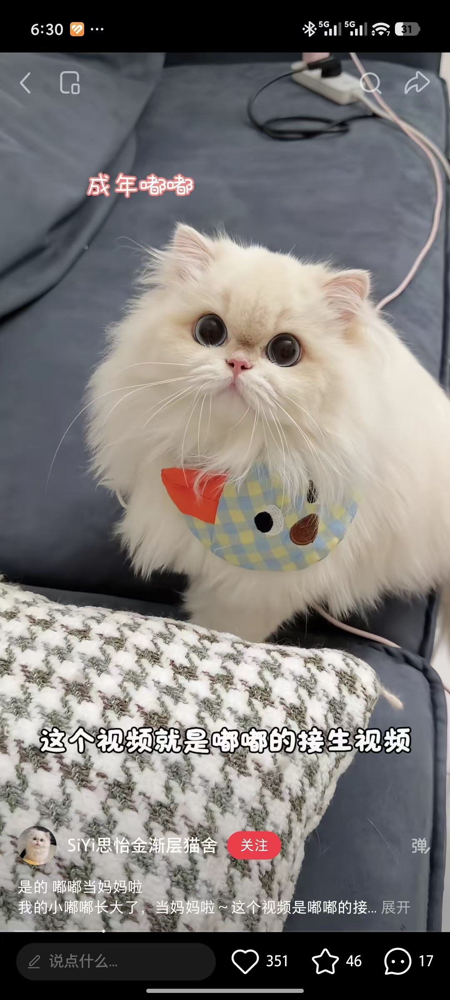
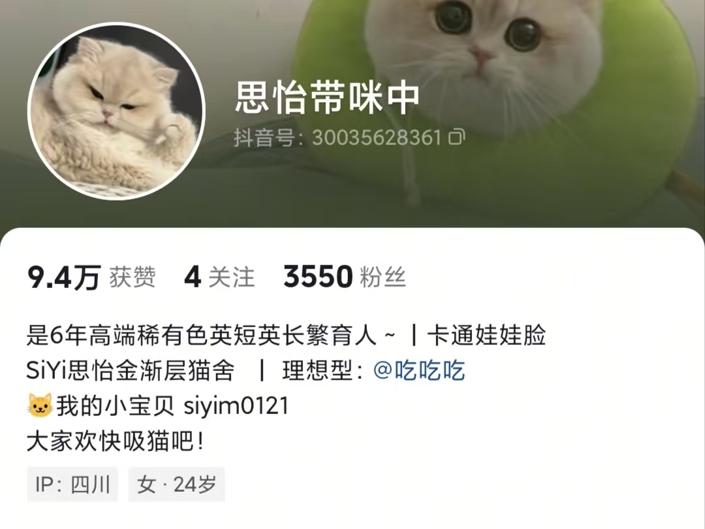
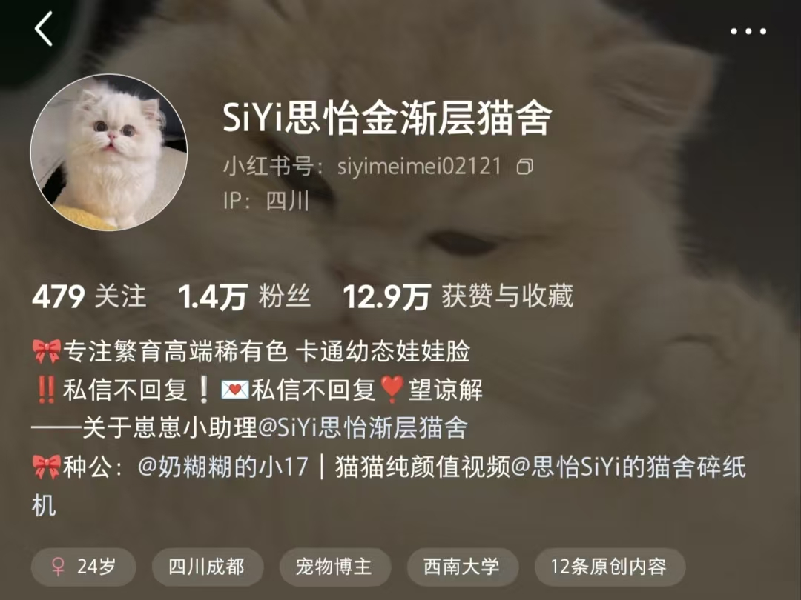

— 繁于指尖的温度 · 绘于心间的柔软 —

猫舍开始于2020年，但是我们和猫猫的缘分早已开始。在做猫舍前，爸爸和妈妈在周围邻居里很出名，因为，我们收养流浪猫。
每次周边认识的人捡到了流浪猫，就会给我爸妈，爸爸妈妈养在办公室。曾经也遇到过非常纨绔的流浪猫哈哈，喂了很久还是把我爸爸手咬穿。这些流浪猫，有爸爸妈妈的朋友想领养了，就会去到新家。
猫猫对我们而言，不仅是一个动物，更是一只可贵的生命，是我们的家人。怀着对生命的敬畏，开始了猫猫繁育。
人总会去寻找自己的价值。繁育到现在也5年多了快6年了。
如果你问我，做这一行最开心的时候是什么时候? 是无数的家长告诉我，接到了崽崽后，很幸福，很开心。是任何时候，都选择坚定的信任我，支持我。
这份事业让我明白，所谓幸福，就是看着每一个从这里出发的小生命，都找到了可以扎根的土壤；而信任，就是在漫长岁月里，我们用爱与责任写下的，柔软但坚韧的纽带。

蓝金渐层 · 顶级童颜

甜美长毛 · 温婉基因
社交动态
1.4万 粉丝信任
小红书：@SiYi思怡金渐层猫舍
抖音：@思怡带咪中 (ID: 30035628361)

